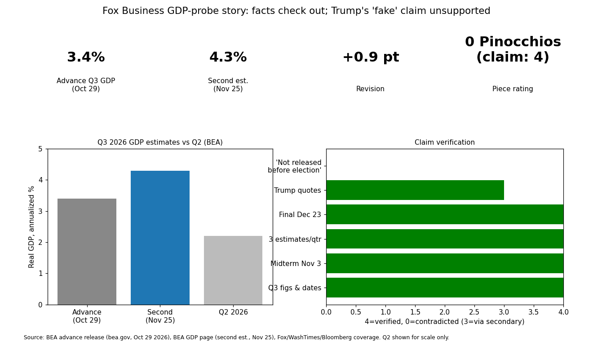

Fox GDP-probe story is accurate; Trump's "fake data" claim is unsupported

Summary of findings
The Fox Business piece rates 0 Pinocchios. Its numbers match BEA: Q3 2026 real GDP 3.4% (advance, Oct 29), revised to 4.3% (second estimate, Nov 25), +0.9 point. Final estimate due Dec 23. The piece notes Trump offered no evidence.
- Trump's underlying claim (data "FAKE", deliberately understated pre-election) merits roughly 4 Pinocchios: BEA published the advance estimate Oct 29 and pre-announced the Nov 25 second estimate; revisions are routine.
- 0.9 pt is larger than the roughly 0.5 pt average revision reported by secondary sources (not verified against BEA tables).
- Not checkable: the Truth Social post verbatim (confirmed only via Washington Times, Bloomberg, HuffPost) and the BEA revision-information page (not reachable).
Claims
| Claim | Result | Confidence |
|---|
| Advance 3.4% | Verified, BEA | High |
| Revised 4.3%, Nov 25 | Verified, BEA | High |
| Three estimates; final Dec 23 | Verified, BEA schedule | High |
| Midterms Nov 3; Thursday post; "immediate investigation" | Corroborated by press | Medium |
| Revision from fuller source data | Consistent with BEA practice | Medium |
Misleading context
The framing that the corrected number was withheld before the election is false: the second estimate was always scheduled after it. Q3 2025 was also reported as 4.3%; do not confuse the two.
Sources
- https://www.bea.gov/news/2026/gdp-advance-estimate-3rd-quarter-2026
- https://www.bea.gov/data/gdp/gross-domestic-product
- https://www.foxbusiness.com/politics/trump-demands-probe-pre-election-gdp-data-revision
- https://www.washingtontimes.com/news/2026/nov/26/trump-seeks-investigation-corrected-preelection-economic-numbers/
- https://finance.yahoo.com/economy/articles/trump-says-revised-gdp-numbers-150335514.html